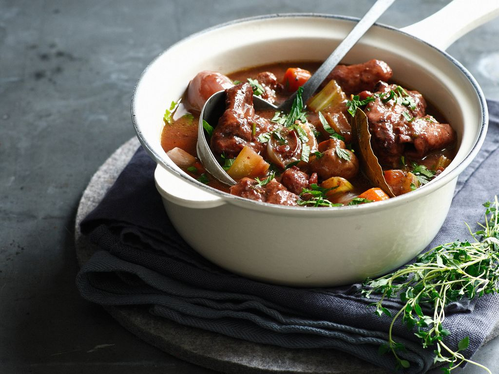

Seitan Bourguignon

Ingredients:
- 2 squares of dark chocolate
- 500 ml of vegetable stock
- 1 tablespoon of flour
- 3 carrots
- 1 onion
- 70 ml of Bourgogne red wine
- 500 g of seitan
- 300 g of mushrooms
- 2 cloves of garlic
- 20 g of margarine
- 1 bouquet garni
- Salt and pepper
Instructions:
- The day before or the morning for dinner:
- Rinse the vegetables and finely chop the garlic, onion, and mushrooms. Cut the carrots into 1 cm pieces.
- In a pot over medium heat, melt the margarine. Add the garlic, onion, carrots, and mushrooms. Sauté for 5 minutes.
- Cut the seitan into thick cubes, similar to stew meat.
- Add the seitan to the pot and let it sear for 2 minutes.
- Deglaze with all the red wine, scraping the bits off the bottom with a spatula.
- Add the bouquet garni and remove from heat.
- Cover and let marinate overnight.
- The next day, pour the vegetable stock into the pot. Season with salt and pepper.
- Cook again, simmering for 1 hour over medium-low heat. Before serving, add the squares of dark chocolate and stir until melted to bind the sauce.
- It's ready! Serve with rice or egg-free pasta.